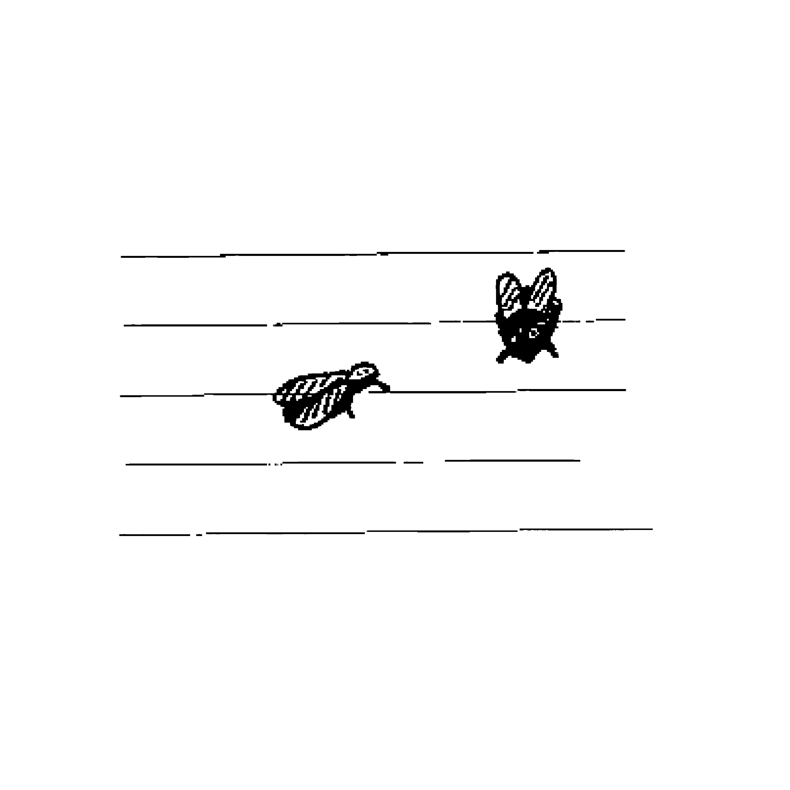

Contact : philippine.talamona@hear.fr
Carnet de références en ligne:
ici

Dans le but d'avoir un regard global à distance sur mon travail du second semestre, je mets à disposition ce site. L'année 2 a été l'ocassion d'expérimentations, de recherches de moyens de représentations, de raconter, de montrer.
Cette année j'ai gravé, codé, peint, photographié, mis en page, supprimé, recommencé, questionné, j'ai beaucoup douté et cherché. La recherche de l'inattendu revient souvent, ainsi que celle de l'expression de 'insconscient et de l'imaginaire.
Le mien est teinté malgré lui de souvenirs heureux, de l'odeur de la rosée sur les feuilles, du deuil, des histoires qui se passent dans les bois.
Merci à Agathe, Chiara, Carla, Zoé, Lise, Agathe et Neve pour leur soutien, et sans lesquelles certaines aventures n'auraient pas existées.
Constellation personnelle, archives, récits de rêves, idées
ce site a été réalisé en avril 2020 / fonts : Capriola et AZeeBee
dernière mise à jour : 14/05/20
Philippine Talamona, HEAR Année 2 communication